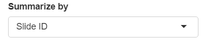

Mean of top 20 / bottom 10 cells report
Kent Johnson
2021-07-29
Source:vignettes/top_10_bottom_20_report.Rmd
top_10_bottom_20_report.RmdThe top 20 / bottom 10 report computes the mean expression of selected markers in the 20 highest-expressing cells and the 10% lowest-expressing cells. The resulting Excel workbook has tabs showing
- Top 20 data Mean expression of high-expressing cells for each marker.
- Bottom 10%ile data Mean expression of low-expressing cells for each marker.
- Ratio top to bottom Ratio of high-to-low expression for each marker. If Opal 780 is one marker, high-to-low ratios less than 30 are highlighted.
- Ratio adjacent fluors Ratio of high-to-high expression for adjacent markers, highlighting ratios that exceed a provided range.
Data requirements
The input to this report is a merged cell seg data file from inForm containing data about the samples to measure, and a configuration file naming the markers of interest.
Configuration file
The configuration file must contain the names of the columns to measure, one name per line, without the units information. For example, a configuration file might have these contents:
Nucleus DAPI Mean
Membrane CD8 (Opal 480) Mean
Membrane PDL1 (Opal 520) Mean
Nucleus Ki67 (Opal 570) Mean
Cytoplasm CD68 (Opal 620) Mean
Membrane CK (Opal 690) Mean
Membrane PD1 (Opal 780) MeanThe order of entries in the configuration file determines which markers will be compared as adjacent markers in the report.
Detailed steps

Select merge file
Click the “Browse” button in the “Select Merge Data” section of the GUI. Use the file selection dialog to select the file containing your merge data.

Select merge file options
If the merge file contains tissue category data, select the tissue categories to analyze.

You can report by slide or by field. Make the appropriate selection in the “Summarize by” drop-down.
